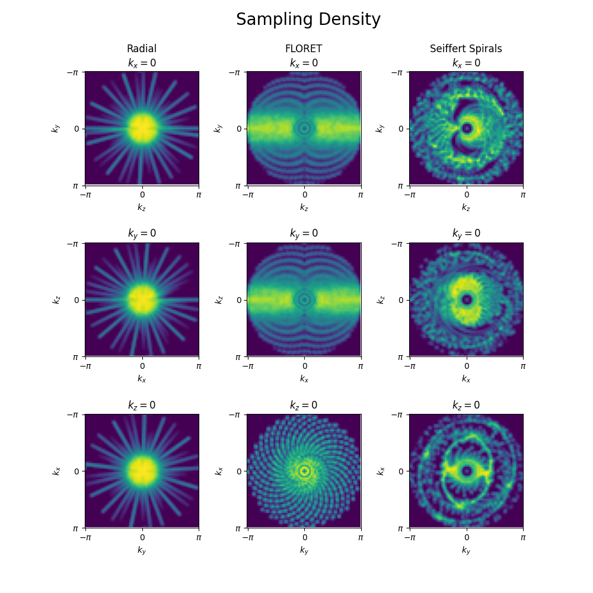
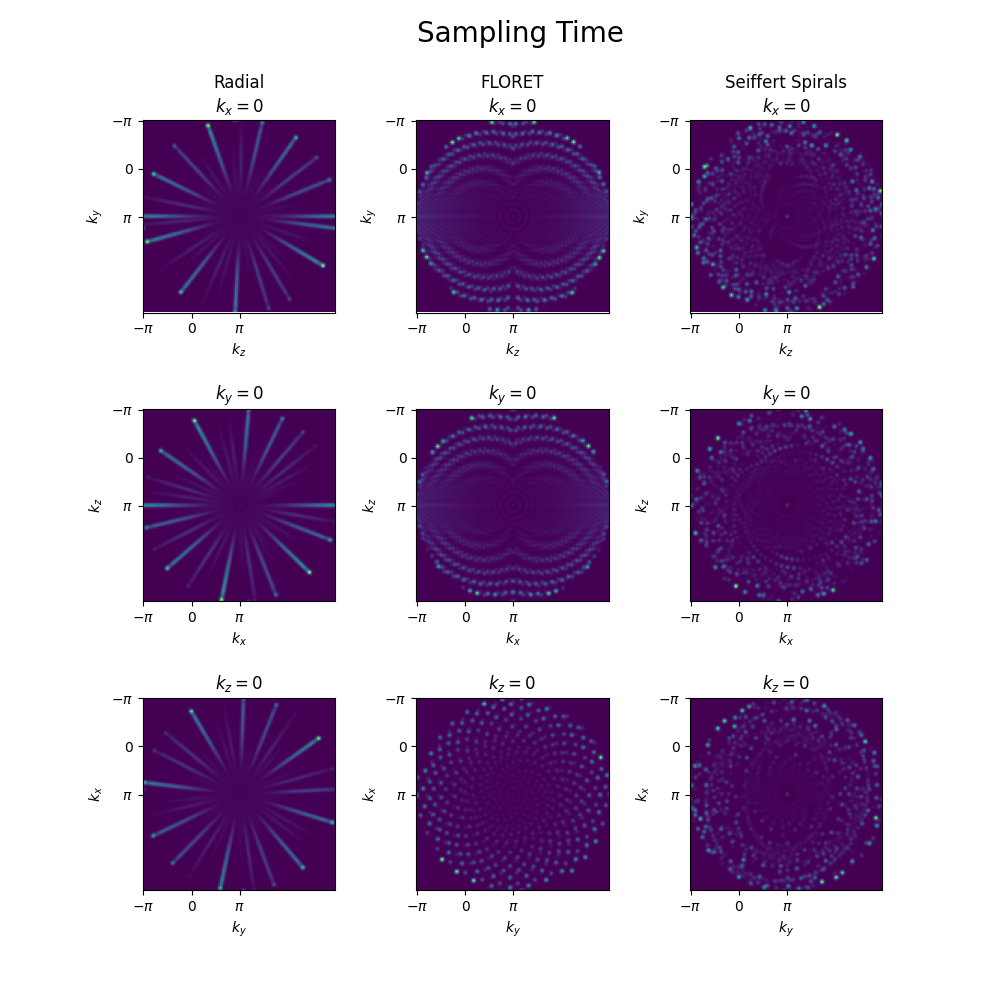
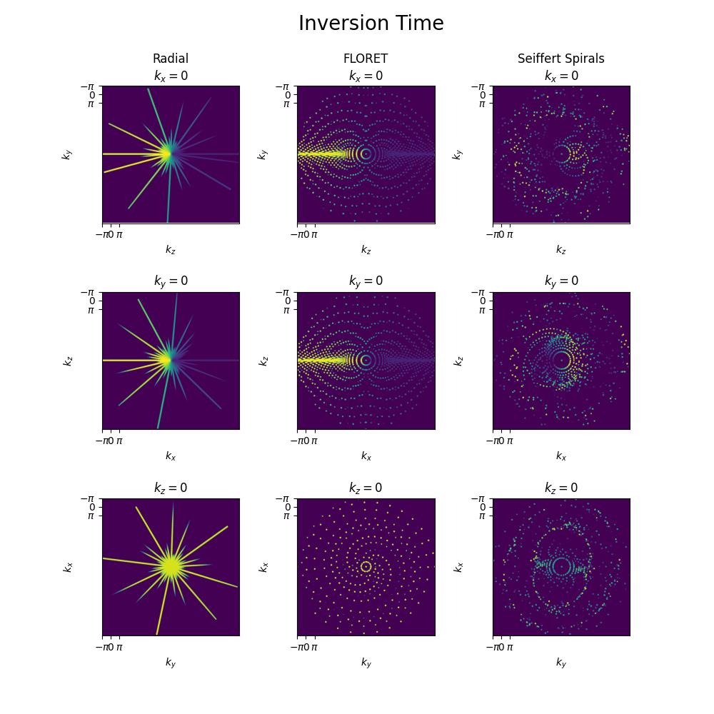
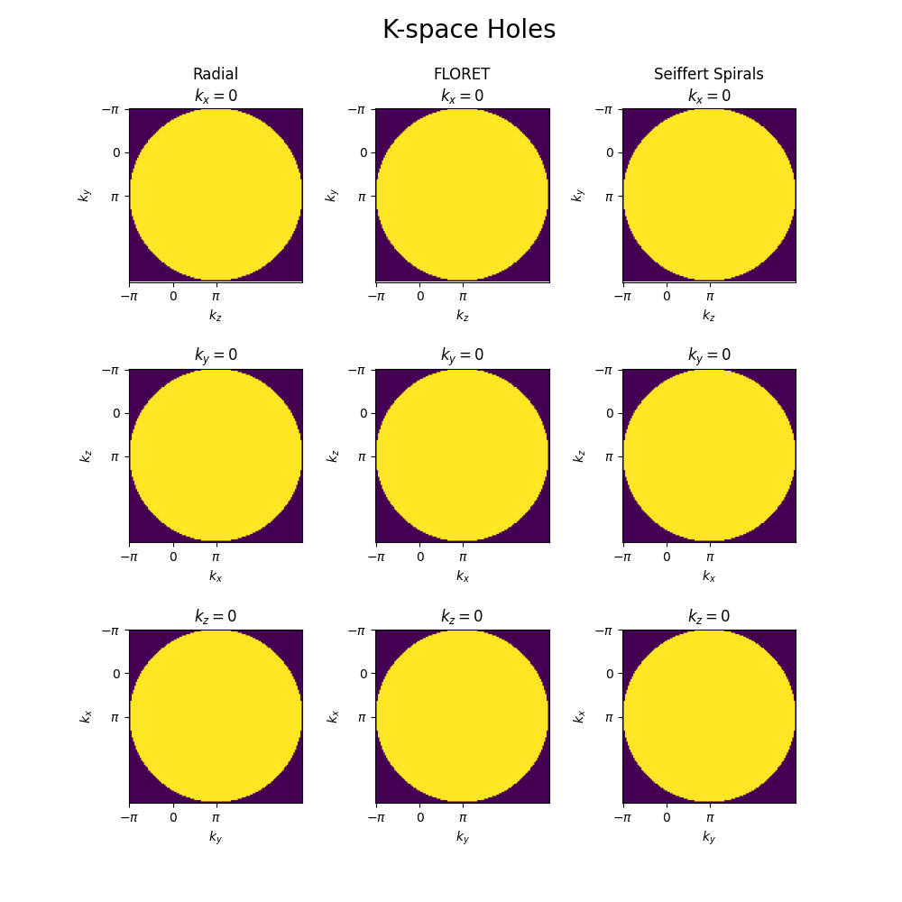
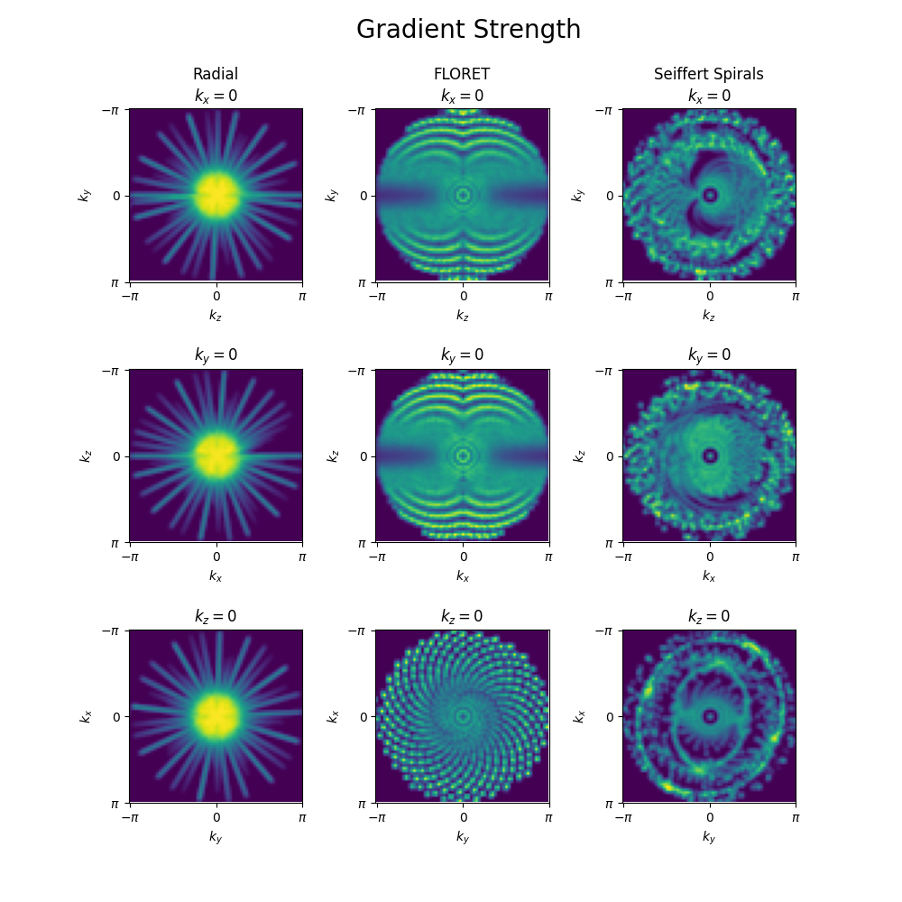
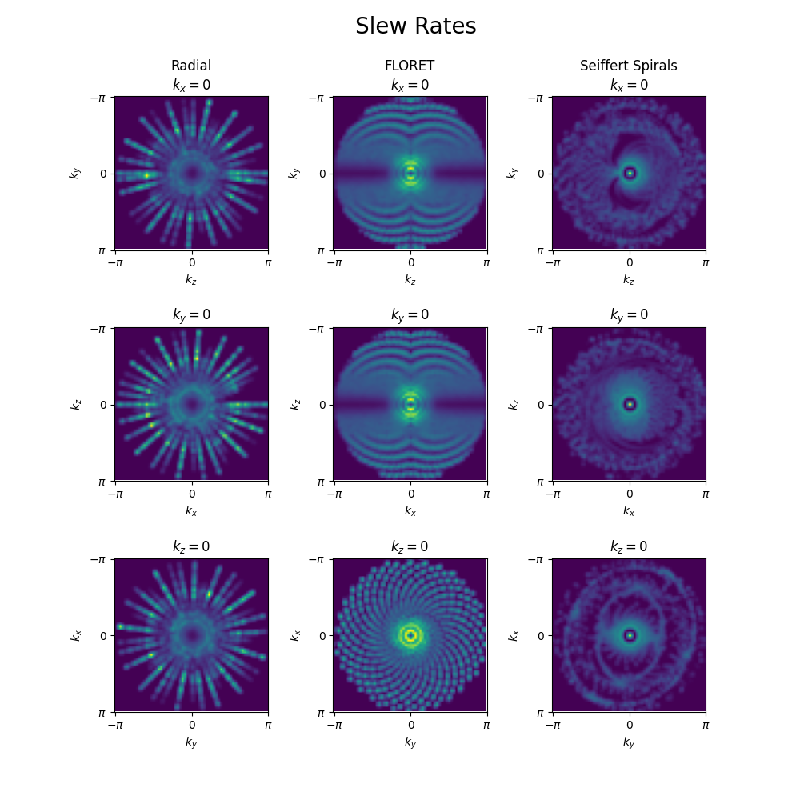

Note
Go to the end to download the full example code. or to run this example in your browser via Binder
Gridded trajectory display#
In this example, we show some tools available to display 3D trajectories. It can be used to understand the k-space sampling patterns, visualize the trajectories, see the sampling times, gradient strengths, slew rates etc. Another key feature is to display the sampling density in k-space, for example to check for k-space holes or irregularities in the learning-based trajectories that would lead to artifacts in the images.
# Imports
import os
from mrinufft.trajectories.display3D import get_gridded_trajectory
import mrinufft.trajectories.trajectory3D as mtt
from mrinufft.trajectories.utils import Gammas, Acquisition
import matplotlib.pyplot as plt
import numpy as np
BACKEND = os.environ.get("MRINUFFT_BACKEND", "gpunufft")
Acquisition parameters#
Here we use acquisition defaults for the trajectory gridding.
Helper function to Displaying 3D Gridded Trajectories#
Utility function to plot mid-plane slices for 3D volumes
def plot_slices(axs, volume, title=""):
def set_labels(ax, axis_num=None):
ax.set_xticks([0, 32, 64])
ax.set_yticks([0, 32, 64])
ax.set_xticklabels([r"$-\pi$", 0, r"$\pi$"])
ax.set_yticklabels([r"$-\pi$", 0, r"$\pi$"])
if axis_num is not None:
ax.set_xlabel(r"$k_" + "zxy"[axis_num] + r"$")
ax.set_ylabel(r"$k_" + "yzx"[axis_num] + r"$")
for i in range(3):
volume = np.rollaxis(volume, i, 0)
axs[i].imshow(volume[volume.shape[0] // 2])
axs[i].set_title(
((title + f"\n") if i == 0 else "") + r"$k_{" + "xyz"[i] + r"}=0$"
)
set_labels(axs[i], i)
Helper function to Displaying 3D Trajectories#
Helper function to showcase the features of get_gridded_trajectory function This function will first grid the trajectory using the get_gridded_trajectory function and then plot the mid-plane slices of the gridded trajectory.
def create_grid(grid_type, trajectories, traj_params, **kwargs):
fig, axs = plt.subplots(3, 3, figsize=(10, 10))
plt.subplots_adjust(hspace=0.5)
for i, (name, traj) in enumerate(trajectories.items()):
grid = get_gridded_trajectory(
traj,
acq,
grid_type=grid_type,
backend=BACKEND,
osf=2,
**kwargs,
)
plot_slices(axs[:, i], grid, title=name)
Trajectories to display#
We instantiate a bunch of sampling trajectories to display hereafter with get_gridded_trajectory and previous helper functions.
trajectories = {
"Radial": mtt.initialize_3D_phyllotaxis_radial(64 * 8, 64),
"FLORET": mtt.initialize_3D_floret(64 * 8, 64, nb_revolutions=2),
"Seiffert Spirals": mtt.initialize_3D_seiffert_spiral(64 * 8, 64),
}
traj_params = {
"FOV": (0.23, 0.23, 0.23),
"img_size": (64, 64, 64),
"gamma": Gammas.HYDROGEN,
}
Sampling density#
Display the density of the trajectories, along the 3 mid-planes. For this, make grid_type=”density”.
create_grid("density", trajectories, traj_params)
plt.suptitle("Sampling Density", y=0.98, x=0.52, fontsize=20)
plt.show()

/volatile/github-ci-mind-inria/gpu_mind_runner/_work/mri-nufft/venv/lib/python3.10/site-packages/mrinufft/_utils.py:94: UserWarning: Samples will be rescaled to [-pi, pi), assuming they were in [-0.5, 0.5)
warnings.warn(
/volatile/github-ci-mind-inria/gpu_mind_runner/_work/mri-nufft/venv/lib/python3.10/site-packages/mrinufft/_utils.py:94: UserWarning: Samples will be rescaled to [-pi, pi), assuming they were in [-0.5, 0.5)
warnings.warn(
/volatile/github-ci-mind-inria/gpu_mind_runner/_work/mri-nufft/venv/lib/python3.10/site-packages/mrinufft/_utils.py:94: UserWarning: Samples will be rescaled to [-pi, pi), assuming they were in [-0.5, 0.5)
warnings.warn(
Sampling time#
Display the sampling times over the trajectories. For this, make grid_type=”time”. It helps to check the sampling times over the k-space trajectories, which can be responsible for excessive off-resonance artifacts. Note that this is just a relative visualization of sample times on a colour scale, and the actual sampling time.
create_grid("time", trajectories, traj_params)
plt.suptitle("Sampling Time", y=0.98, x=0.52, fontsize=20)
plt.show()

/volatile/github-ci-mind-inria/gpu_mind_runner/_work/mri-nufft/venv/lib/python3.10/site-packages/mrinufft/_utils.py:94: UserWarning: Samples will be rescaled to [-pi, pi), assuming they were in [-0.5, 0.5)
warnings.warn(
/volatile/github-ci-mind-inria/gpu_mind_runner/_work/mri-nufft/venv/lib/python3.10/site-packages/mrinufft/_utils.py:94: UserWarning: Samples will be rescaled to [-pi, pi), assuming they were in [-0.5, 0.5)
warnings.warn(
/volatile/github-ci-mind-inria/gpu_mind_runner/_work/mri-nufft/venv/lib/python3.10/site-packages/mrinufft/_utils.py:94: UserWarning: Samples will be rescaled to [-pi, pi), assuming they were in [-0.5, 0.5)
warnings.warn(
Inversion time#
Display the inversion time of the trajectories. For this, make grid_type=”inversion”. This helps in obtaining the inversion time when particular region of k-space is sampled, assuming the trajectories are time ordered, and the argument turbo_factor is specified, which is the time between 2 inversion pulses.
create_grid("inversion", trajectories, traj_params, turbo_factor=64)
plt.suptitle("Inversion Time", y=0.98, x=0.52, fontsize=20)
plt.show()

/volatile/github-ci-mind-inria/gpu_mind_runner/_work/mri-nufft/venv/lib/python3.10/site-packages/mrinufft/_utils.py:94: UserWarning: Samples will be rescaled to [-pi, pi), assuming they were in [-0.5, 0.5)
warnings.warn(
/volatile/github-ci-mind-inria/gpu_mind_runner/_work/mri-nufft/venv/lib/python3.10/site-packages/mrinufft/_utils.py:94: UserWarning: Samples will be rescaled to [-pi, pi), assuming they were in [-0.5, 0.5)
warnings.warn(
/volatile/github-ci-mind-inria/gpu_mind_runner/_work/mri-nufft/venv/lib/python3.10/site-packages/mrinufft/_utils.py:94: UserWarning: Samples will be rescaled to [-pi, pi), assuming they were in [-0.5, 0.5)
warnings.warn(
K-space holes#
Display the k-space holes in the trajectories. For this, make grid_type=”holes”. K-space holes are areas with missing trajectory coverage, and can typically occur with learning-based trajectories when optimized using a specific loss. This feature can be used to identify the k-space holes, which could lead to Gibbs-like ringing artifacts in the images.
create_grid("holes", trajectories, traj_params, threshold=1e-2)
plt.suptitle("K-space Holes", y=0.98, x=0.52, fontsize=20)
plt.show()

/volatile/github-ci-mind-inria/gpu_mind_runner/_work/mri-nufft/venv/lib/python3.10/site-packages/mrinufft/_utils.py:94: UserWarning: Samples will be rescaled to [-pi, pi), assuming they were in [-0.5, 0.5)
warnings.warn(
/volatile/github-ci-mind-inria/gpu_mind_runner/_work/mri-nufft/venv/lib/python3.10/site-packages/mrinufft/_utils.py:94: UserWarning: Samples will be rescaled to [-pi, pi), assuming they were in [-0.5, 0.5)
warnings.warn(
/volatile/github-ci-mind-inria/gpu_mind_runner/_work/mri-nufft/venv/lib/python3.10/site-packages/mrinufft/_utils.py:94: UserWarning: Samples will be rescaled to [-pi, pi), assuming they were in [-0.5, 0.5)
warnings.warn(
Gradient strength#
Display the gradient strength of the trajectories. For this, make grid_type=”gradients”. This helps in displaying the gradient strength applied at specific k-space region, which can be used as a surrogate to k-space “velocity”, i.e. how fast does trajectory pass through a given region in k-space. It could be useful while characterizing spatial SNR profile in k-space
create_grid("gradients", trajectories, traj_params)
plt.suptitle("Gradient Strength", y=0.98, x=0.52, fontsize=20)
plt.show()

/volatile/github-ci-mind-inria/gpu_mind_runner/_work/mri-nufft/venv/lib/python3.10/site-packages/mrinufft/_utils.py:94: UserWarning: Samples will be rescaled to [-pi, pi), assuming they were in [-0.5, 0.5)
warnings.warn(
/volatile/github-ci-mind-inria/gpu_mind_runner/_work/mri-nufft/venv/lib/python3.10/site-packages/mrinufft/_utils.py:94: UserWarning: Samples will be rescaled to [-pi, pi), assuming they were in [-0.5, 0.5)
warnings.warn(
/volatile/github-ci-mind-inria/gpu_mind_runner/_work/mri-nufft/venv/lib/python3.10/site-packages/mrinufft/_utils.py:94: UserWarning: Samples will be rescaled to [-pi, pi), assuming they were in [-0.5, 0.5)
warnings.warn(
Slew rates#
Display the slew rates of the trajectories. For this, make grid_type=”slew”. This helps in displaying the slew rates applied at specific k-space region, which can ne used as a surrogate to k-space “acceleration”, i.e. how fast does trajectory change in a given region in k-space It could be useful to understand potential regions in k-space with eddy current artifacts and trajectories which could lead to peripheral nerve stimulations.
create_grid("slew", trajectories, traj_params)
plt.suptitle("Slew Rates", y=0.98, x=0.52, fontsize=20)
plt.show()

/volatile/github-ci-mind-inria/gpu_mind_runner/_work/mri-nufft/venv/lib/python3.10/site-packages/mrinufft/_utils.py:94: UserWarning: Samples will be rescaled to [-pi, pi), assuming they were in [-0.5, 0.5)
warnings.warn(
/volatile/github-ci-mind-inria/gpu_mind_runner/_work/mri-nufft/venv/lib/python3.10/site-packages/mrinufft/_utils.py:94: UserWarning: Samples will be rescaled to [-pi, pi), assuming they were in [-0.5, 0.5)
warnings.warn(
/volatile/github-ci-mind-inria/gpu_mind_runner/_work/mri-nufft/venv/lib/python3.10/site-packages/mrinufft/_utils.py:94: UserWarning: Samples will be rescaled to [-pi, pi), assuming they were in [-0.5, 0.5)
warnings.warn(
Total running time of the script: (1 minutes 35.080 seconds)